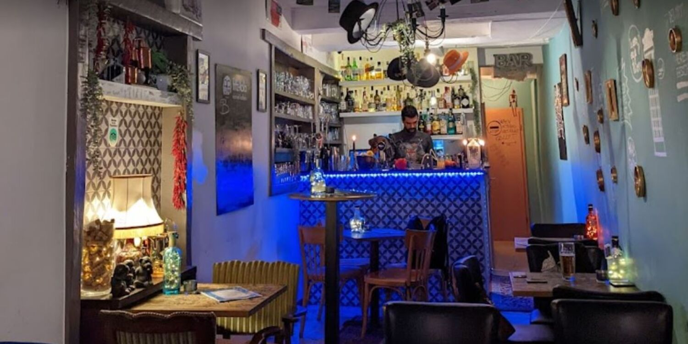
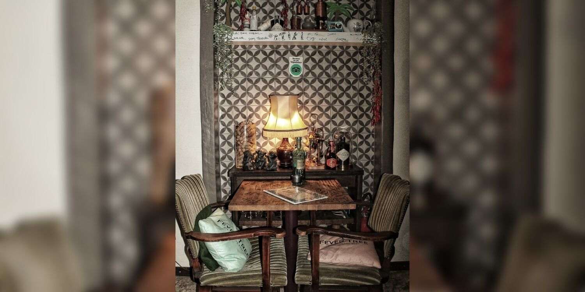
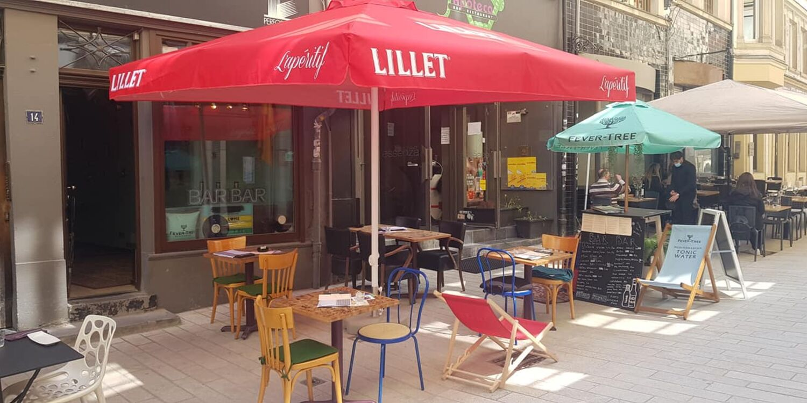
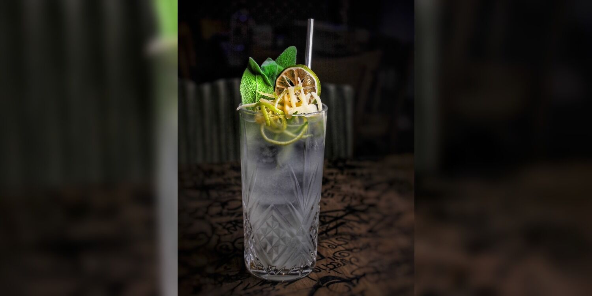
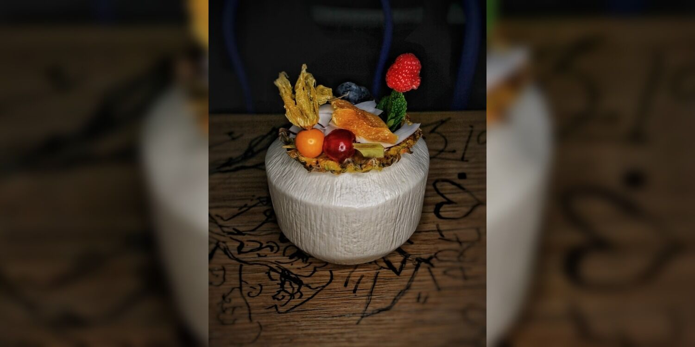
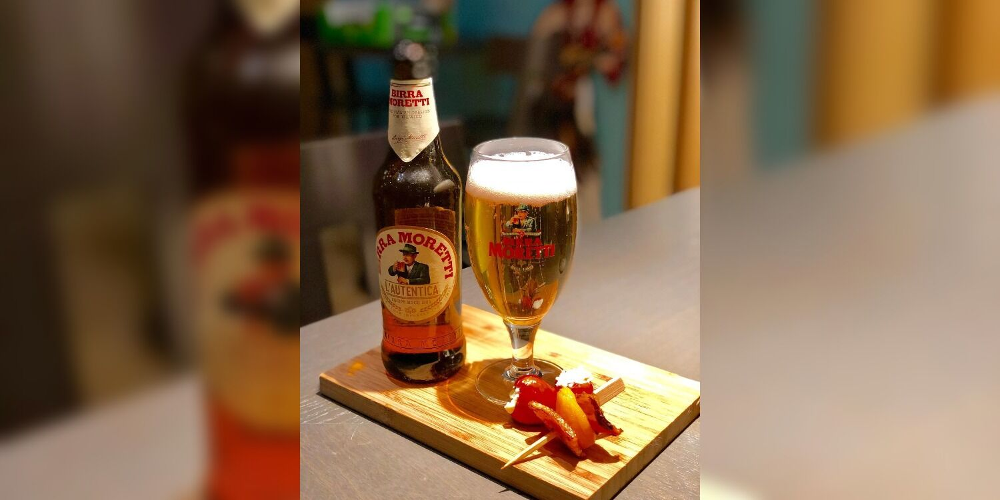

Rue de la Boucherie · Ville Haute
BARBAR
Un petit bar à l'écart, tables serrées, bar carrelé de bleu cobalt qui s'allume le soir. Tapas méditerranéennes à partager, cocktails d'auteur — et des tables couvertes des mots de ceux qui sont passés avant vous.
On écrit sur les tables.
Ici, personne ne vous tend un stylo — mais tout le monde en a laissé un mot : initiales, blagues de comptoir, petits dessins, gravés ou griffonnés à même le bois, sous le verre. Une table qui se lit comme un carnet de passage, table après table, verre après verre.
Le reste du décor suit le même principe : rien de calculé. Des chapeaux accrochés au plafond, une suspension à franges, des guirlandes de piment séché — et le bar, carrelé de bleu cobalt, qui s'allume à la tombée du soir.
— déjà écrit par quelqu'un d'autre
Un bar de poche, dans une ruelle de la Ville Haute.
BAR:BAR tient dans une ruelle pavée, à deux pas du Palais grand-ducal — quelques tables serrées à l'intérieur, une poignée de plus sous un parasol rouge Lillet en été, un air de vacances au cœur de la ville. On y vient pour un cocktail bien pensé et des tapas méditerranéennes à partager, dans un décor de brocante assumé : carrelage à motifs, bouteilles éclairées de guirlandes, cartes postales.
Élu meilleur bar à cocktails aux Luxembourg Nightlife Awards, deux années de suite selon les répertoires du secteur — accolade non vérifiée directement auprès de l'établissement, à confirmer.

Terrasse d'été Ville Haute · Luxembourg 14, rue de la BoucherieCocktails d'auteur, tapas à partager.
Reconstituée à partir des avis et des photos publiques — la carte, les intitulés exacts et les prix restent à confirmer avec l'établissement.



- Piña Daiquiri
- Mayahuel Sour
- Sélection de gins & martinis

Tapas méditerranéennes
- Planches à partager — brochettes, pintxos, format apéro.
- Bissara — purée de fèves marocaine, huile d'olive.
- Filet américain — préparé, servi frais.
- Pommes de terre à tremper — sauces maison.
Carte, intitulés et tarifs actuels à confirmer sur place.
14, rue de la Boucherie.
Pas de site à ce jour — juste une page Facebook et quelques répertoires. Ceci est un aperçu de ce que pourrait être le vôtre, composé à partir de vos propres photos.